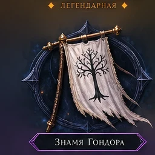
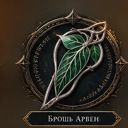
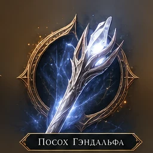
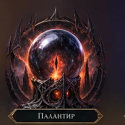
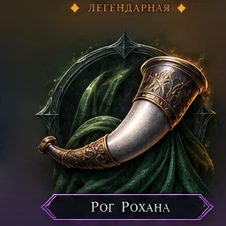

Y
Игрок · Online
Yukio
Riders of Rohan · Капитан
Уровень 2418 420 / 21 000 XP
До 25 уровня: 2 580 XP · откроется дополнительный слот реликвии
2 156Рейтинг▲ 34
128Побед+6
37Поражений
77%Winrate+3%
Форма
Последние 10 матчей
8–2+124 ELO
Последние матчи
| Противник | Территория | Результат | ELO |
|---|---|---|---|
| Gondor | Эдорас | Победа | +32 |
| Mordor | Итилиэн | Победа | +28 |
| Angmar | Фангорн | Поражение | -18 |
| Isengard | Вестфолд | Победа | +25 |
Активные реликвии
 Кольцо гор
Кольцо гор Клинок короля
Клинок короля
Белое знамя25уровень
Любимая территория
Эдорас
18 побед · 4 обороны · 72% winrate
Лучший соперник
Gondor
31 матч · 68% побед
Серия
7 побед
Личный рекорд сезона: 11
История
Матчи
| Дата | Соперник | Территория | Результат | Счёт | ELO |
|---|---|---|---|---|---|
| 24.08 | Gondor | Эдорас | Победа | 2:1 | +32 |
| 23.08 | Mordor | Итилиэн | Победа | 2:0 | +28 |
| 21.08 | Angmar | Фангорн | Поражение | 1:2 | -18 |
| 20.08 | Isengard | Вестфолд | Победа | 2:0 | +25 |
| 18.08 | Gondor | Анориэн | Поражение | 0:2 | -22 |
| 17.08 | Mordor | Эдорас | Победа | 2:1 | +31 |
| 15.08 | Dale | Фангорн | Победа | 2:0 | +20 |
165всего матчей
128побед
+684ELO за сезон
77%Winrate
2.4K/D
68%атаки выиграно
81%обороны выиграно
Winrate по противникам
Gondor68%
Mordor74%
Angmar61%
Isengard82%
Роли в матчах
165матчей
Атака72 · 44%
Оборона61 · 37%
Поддержка32 · 19%
Динамика рейтинга
28 из 64
Достижения
⚔
Первый клинок
Победить в первом матче
100%
◈
Хранитель рубежа
10 успешных оборон
80%
✦
Завоеватель
Захватить 15 территорий
60%
⌁
Летописец
Сыграть 100 матчей
100%
◇
Реликварий
Собрать 20 реликвий
90%
♜
Владыка земель
Удерживать 5 земель
100%
♛
Король сезона
Завершить сезон в Top 3
40%
✧
Бессмертный
10 побед подряд
70%
18 из 42
Коллекция реликвий
ОружиеКлинок Первого короля+12% критические очки
Клинок Первого короля+12% критические очкиТалисманКольцо Пепельных гор+8% атака
Кольцо Пепельных гор+8% атакаЗнамяБелое знамя+5% оборона
ОсобаяЗаблокированоНужен 25 уровень
Реликвия #1
В коллекции
Реликвия #2
В коллекции
Реликвия #3
В коллекцииРеликвия #4
В коллекции
Реликвия #5
В коллекции
Реликвия #6
В коллекцииРеликвия #7
В коллекции
Реликвия #8
В коллекцииЛичный вклад
Территории
34захвата
29обороны
9земель клана
1 240влияния
| Территория | Матчи | Победы | Winrate | Вклад |
|---|---|---|---|---|
| Эдорас | 25 | 18 | 72% | +320 |
| Фангорн | 17 | 13 | 76% | +240 |
| Вестфолд | 14 | 11 | 79% | +180 |
| Итилиэн | 11 | 7 | 64% | +150 |
| Анориэн | 9 | 5 | 56% | +110 |